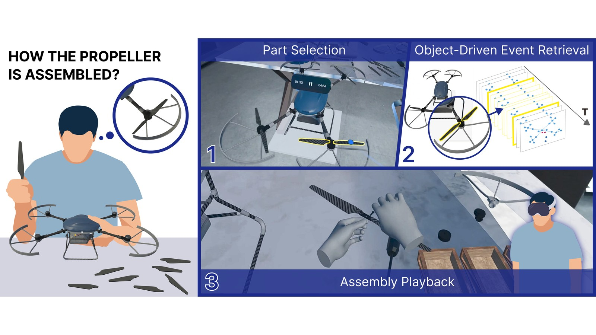
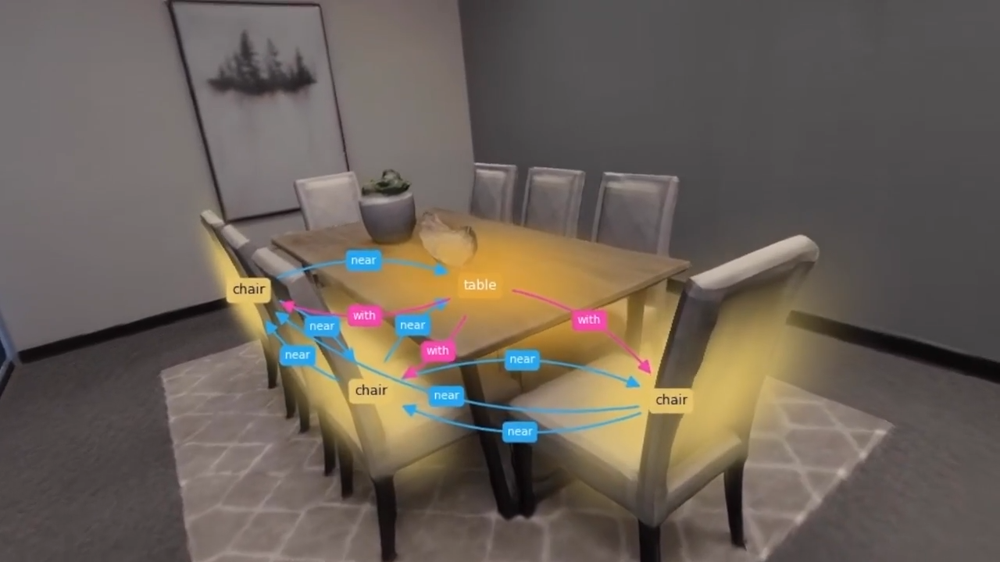
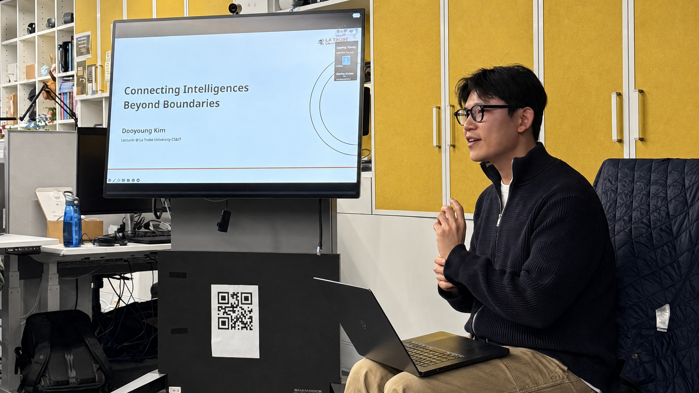

Aug 2026 PublicationTwo Papers Accepted at IEEE ISMAR 2026
Mix3R and Object-Driven Event Retrieval were accepted at IEEE ISMAR 2026.
Building Interactive XR Intelligence
We connect humans and AI through XR, augmenting human capabilities beyond the limits of space, time, and reality.
About
Lecturer in Computer Science & Information Technology, La Trobe University
I research human-computer interaction (HCI), human-centered AI, and Interactive XR Intelligence. My work spans spatial computing, multimodal interaction, and human–AI/robot interaction, building XR interfaces that connect perception, memory, action, and collaboration across realities.


Aug 2026 PublicationMix3R and Object-Driven Event Retrieval were accepted at IEEE ISMAR 2026.

Aug 2026 PublicationDeWorldSG: Depth-Aware 3D Semantic Scene Graph Generation via World-Model Priors was accepted at ECCV 2026.

July 2026 Invited TalkPresented “Connecting Intelligences beyond Boundaries,” hosted by Prof. Tim Dwyer in the Department of Human Centred Computing.
 June 2026
Latest
June 2026
Latest
Started as a Lecturer in Computer Science and Information Technology in a continuing academic position.
 Jan 2026
Publication
Jan 2026
Publication
Four papers from co-advised students were accepted to IEEE TVCG and presented at IEEE VR 2026.
 Dec 2025
Workshop
Dec 2025
Workshop
The third XRMemory workshop will be held at IEEE VR 2026, continuing the community around spatial memory and XR.
 Nov 2025
Special Issue
Nov 2025
Special Issue
Serving as Lead Guest Editor for the XRMemory Special Issue in Springer Virtual Reality.
 Oct 2025
Award
Oct 2025
Award
Received two Best Paper Awards at IEEE ISMAR 2025.
Focus Areas
Human-Computer Interaction · Spatial Computing
Record, compress, and replay spatial experiences across places and time through semantic scene graphs and adaptive replay.

Human-Centered AI · Human–AI Interaction
Digital self and autonomous agency through XR twins that think, work, and stay aligned with the people they represent.
Human-Centered AI · Human Factors
Human Experience-Aware Response and Trajectory (HEART) combines human factors and multimodal human experience modeling to represent how people perceive, anticipate, and respond through trajectories shaped by context, memory, and interaction.
Interested in collaborating?
I welcome students, researchers, and partners interested in XR, AI, and human-centered intelligent systems.
Contact